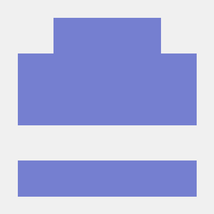
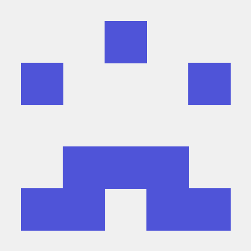

팀원

92118499 박용담

92112952 김윤호

92550130 김우찬

92313661 정호준
출처
index 파일에서 사용한 소스의 출처: w3schools
secon 파일에서 사용한 소스의 출처 https://www.seconexpo.com/2025/kor/main.asp세계보안엑스포, https://www.youtube.com/watch?v=Ev2M6KVU0os&t=12sKEVIS 채널의 영상을 사용했습니다.
teamproject와 project의 파일코드는 직접 제작한 소스입니다